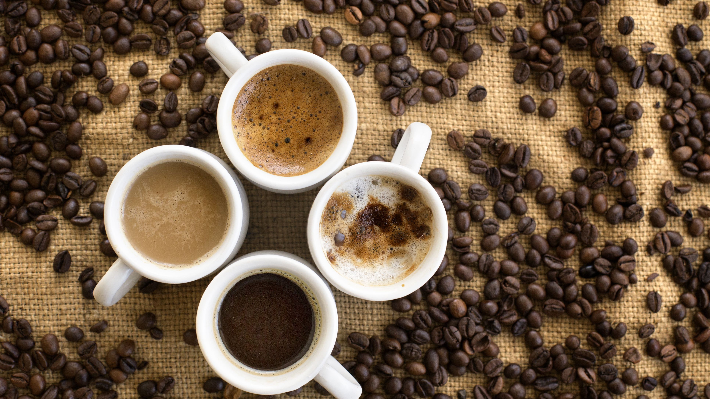
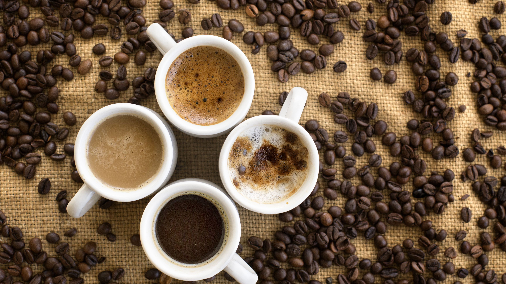

Going back in time, we’ve seen that coffee is not just a drink. It’s a means of social interaction, and has been for a long time. In the past, people gathered together to share a cup of coffee and exchange information. In North America and a lot of Western European countries, Starbucks and other major chains have dominated the market because they are providing to the customers a complete experience around coffee. Coffee and friends, coffee and work, coffee and snacks, coffee to go! There’s the Irish mix with whiskey called “Irish Coffee”. In Italy the invention of espresso and espresso machine made it the favorite whole-day beverage of Italians. In Greece, there is the “kafenio”, an old fashioned coffee shop for old gentlemen, where they drink Greek coffee and exchange political ideas or they play cards and a board game called “tavli”. And in some countries, like Colombia or Brazil, the whole economy is based on coffee.
Fact 1: Coffee is consumed in such great quantities, it is the world’s 2nd largest traded commodity, surpassed only by crude oil. It is our most beloved beverage after water. It’s worth well over $100 billion worldwide.
Fact 2: Good coffee growing conditions are dependent on variables such as high altitudes, tropical climates and rich soil. Therefore, despite all the rich and diverse landscapes of the Continental United States, Hawaii is the only state suitable for growing coffee plants. It has been producing coffee even before it was a state. (Recently, though, farms in California did start growing coffee bushes!)
Fact 3: Brazil couldn’t afford to send its athletes to Los Angeles for the 1932 Olympics, so the government sent them in a ship full of coffee which was sold on the way to finance their trip.
 
